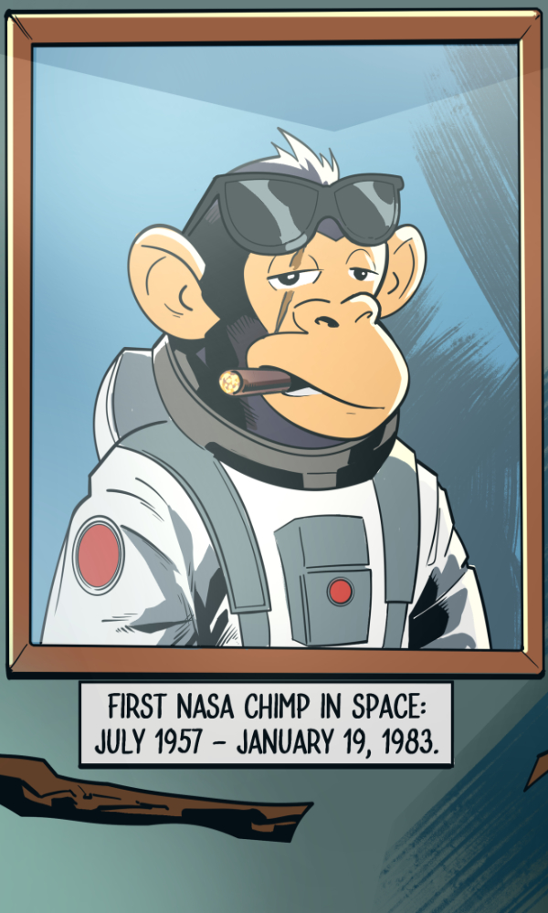

Our Mission Begins with History
Ham to Mars honors the legacy of Ham the Astrochimp — the first hominid in space — by launching a fun and visionary crypto project that inspires curiosity, resilience, and interstellar memes.

Who was Ham?
Ham was a chimpanzee who made history in 1961 as the first primate to survive a space mission. He paved the way for human spaceflight, and now... for ham-themed moon missions 🐵🚀.
Our Mission
We’re building a fun, community-powered ecosystem to honor Ham’s legacy — one where curiosity, resilience, and humor fuel our journey to Mars. 🚀🌕